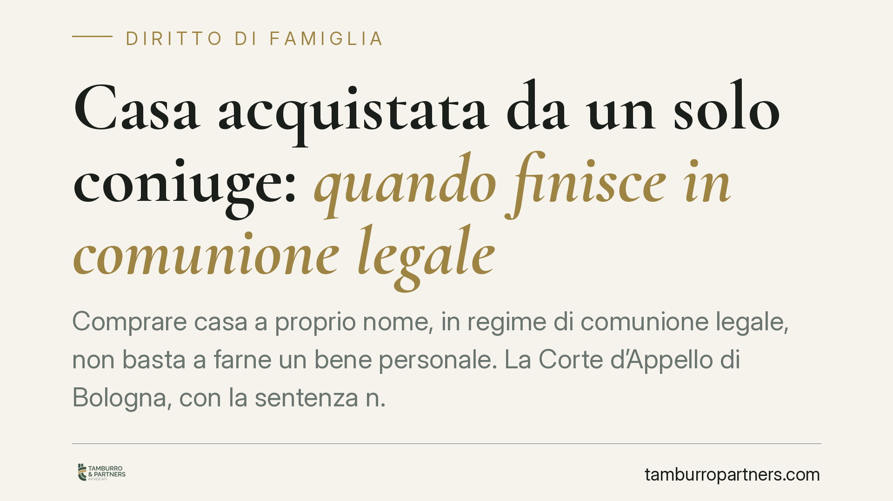

Casa acquistata da un solo coniuge: quando finisce in comunione legale
Comprare casa a proprio nome, in regime di comunione legale, non basta a farne un bene personale. La Corte d'Appello di Bologna, con la sentenza n. 1687/2025, ribadisce che serve indicare con precisione la provenienza del denaro. Un tema che tocca chiunque acquisti immobili durante il matrimonio, soprattutto se il denaro transita da un conto cointestato.

Il caso deciso a Bologna
La vicenda è comune. Uno dei coniugi acquista un immobile intestandolo solo a sé. Nell'atto notarile l'altro coniuge dichiara che il bene è personale, così da escluderlo dalla comunione legale. Anni dopo, in sede di separazione, sorge la lite: la casa è di uno solo o di entrambi?
La Corte d'Appello di Bologna, con la sentenza n. 1687/2025, ha risposto con rigore. La sola dichiarazione del coniuge non acquirente non basta. Occorre che l'atto indichi la specifica provenienza del denaro personale utilizzato. In mancanza, il bene ricade nella comunione legale.
Inquadramento normativo
La regola generale è nell'art. 177 cod. civ.: gli acquisti compiuti durante il matrimonio, salvo eccezioni, entrano nella comunione legale. Le eccezioni sono elencate nell'art. 179 cod. civ.
In particolare, la lettera f) dell'art. 179 esclude dalla comunione i beni acquistati con il prezzo del trasferimento di beni personali o con il loro scambio, purché ciò sia espressamente dichiarato nell'atto di acquisto. Il comma 2 aggiunge che, per gli immobili (e i mobili registrati), è necessaria anche la partecipazione all'atto del coniuge non acquirente.
La giurisprudenza ha però chiarito che questa partecipazione non ha valore costitutivo automatico. La Cassazione a Sezioni Unite (sent. n. 22755/2009) ha stabilito che la dichiarazione del coniuge non acquirente non è una rinuncia negoziale: serve a documentare la reale natura personale del denaro. Se manca la prova della provenienza, la comunione opera comunque.
Qui entra in gioco l'art. 1298, comma 2, cod. civ.: sui conti cointestati si presume che le somme appartengano in parti uguali agli intestatari. Denaro prelevato da un conto comune è, salvo prova contraria, in parte anche dell'altro coniuge. Da qui il maggior rigore della Corte quando il pagamento passa da un conto in cointestazione.
Un cenno merita l'art. 934 cod. civ. sull'accessione, richiamato quando si costruisce sul suolo altrui: chi possiede il terreno acquista, in linea di principio, quanto vi si edifica. Anche in questi casi la tracciabilità delle risorse è decisiva.
Cosa cambia in concreto
Per chi è sposato in comunione legale, la lezione è netta. Intestare la casa a un solo coniuge e far mettere a verbale una dichiarazione generica di "bene personale" non protegge dalla comunione.
Se in caso di crisi coniugale l'altro coniuge dimostra che il denaro non era univocamente personale, l'immobile può essere considerato comune per metà. Il rischio aumenta quando il prezzo è stato pagato con bonifici da conti cointestati o con provviste dalla dubbia origine.
Il problema non è solo teorico: incide sulla divisione dei beni, sull'assegnazione della casa familiare e sul valore economico in gioco al momento della separazione o del divorzio.
Attenzione anche al ruolo del notaio. Il professionista raccoglie le dichiarazioni delle parti, ma non certifica la reale provenienza del denaro. La correttezza formale dell'atto non equivale alla prova sostanziale richiesta dai giudici.
Cosa fare in concreto
- Documentate la provenienza del denaro personale prima dell'acquisto. Conservate estratti conto, atti di vendita di beni pregressi, donazioni o successioni che dimostrino l'origine non comune della somma.
- Evitate di pagare da conti cointestati se volete che il bene resti personale. Utilizzate un conto individuale alimentato da risorse tracciabilmente vostre.
- Fate inserire nell'atto notarile una dichiarazione specifica, non generica: indicate da dove proviene esattamente il denaro (es. "prezzo della vendita dell'immobile X", "donazione dei genitori del ...").
- Valutate la convenzione di separazione dei beni se l'obiettivo è mantenere autonomia patrimoniale tra i coniugi. È lo strumento più solido per prevenire contestazioni.
- Chiedete una consulenza preventiva quando l'acquisto ha valore rilevante o il denaro ha origine mista: correggere a posteriori è molto più difficile.
La pianificazione a monte, con documentazione ordinata e clausole precise, riduce sensibilmente il contenzioso futuro.
Disclaimer
Contributo informativo a cura di Tamburro & Partners - Avv. Giuseppe Tamburro. Non costituisce parere legale.
Ogni famiglia ha il suo equilibrio.
Separazione, divorzio, affidamento, assegno: se vuoi un confronto riservato su una specifica situazione, scrivi allo studio. Ti rispondiamo entro un giorno lavorativo.